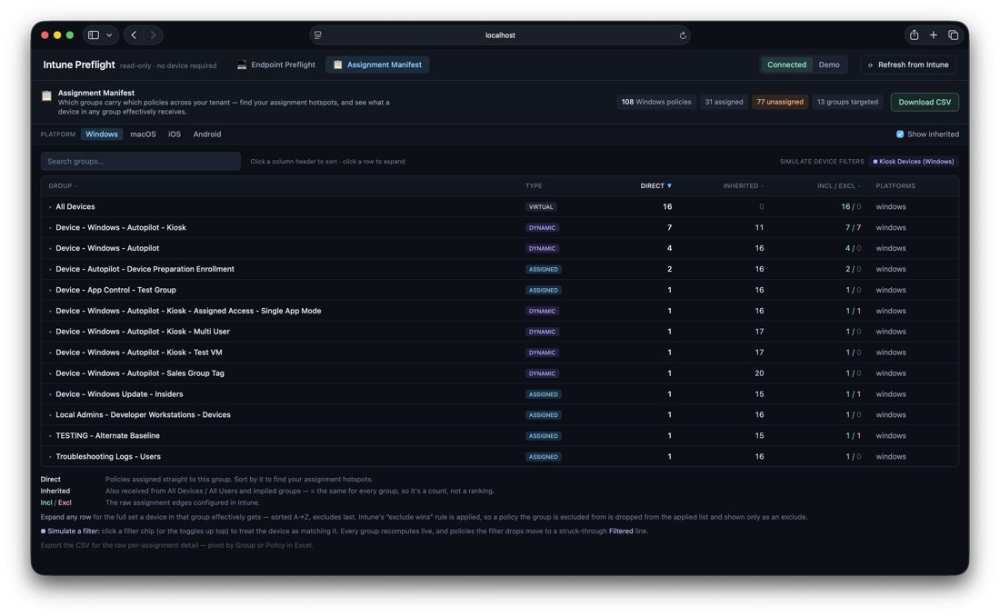
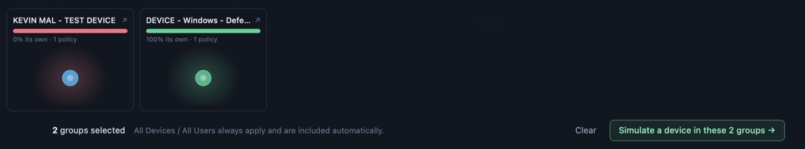

Connect read-only to your tenant, pick an OS and the Entra groups a device belongs to, and see the exact merged CSP baseline it would receive. Conflicts, overlaps, Autopilot and legacy Endpoint Security included. No hardware, no enrollment, no writes.
Every Graph permission it asks for is *.Read.All. It reads your tenant and never writes a single change to it.
Self-hosted. Your tenant and client secret live in the server's .env, are never sent to the browser, and never touch anyone else's infrastructure.
App-only permissions mean you see the complete configuration, not one admin's RBAC slice, so a preflight reflects the entire tenant.
Intune tells you what you assigned. Preflight tells you what a device actually ends up with, and where your assignments collide.
One screen for every policy-to-group assignment across your tenant, per platform. Sort by direct assignments to find your hotspots, and expand any group to see exactly what a device in it effectively receives after Intune's exclude-wins rules.


Check a group and see, at a glance, whether its policies are its own or borrowed from half the tenant. Cool means unique to the group; hot means shared widely. Then send those groups straight into the simulator to see the merged result on a device.
Genuine value disagreements vs redundant duplicate config, surfaced separately (Windows).
Deployment profiles and device-preparation shown as an enrollment stage, dual-targeting and all.
Intents-based BitLocker, Defender AV, Firewall and ASR read and merged with modern policies.
Every setting in one filterable grid, with the real CSP path and a Microsoft Learn link per setting.
Windows, macOS, iOS/iPadOS and Android, each scoped and resolved separately.
JSON or CSV from both the simulator and the Manifest, ready to pivot in Excel.
A bundled synthetic tenant — modelled on the Open Intune Baseline — that exercises every feature: conflicts, overlaps, Autopilot, legacy Endpoint Security, the seating charts. No app registration, no sign-in, nothing to install. Runs entirely in your browser.
Open the demo →Clone it, add a read-only app registration, and point it at your tenant. Your credentials never leave your machine.
See the full merged baseline, catch the conflicts, and know what lands on a device — all before you deploy.